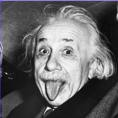

Стъпка по стъпка: оранжево е новото на стъпката, синьо – построеното дотук. Червено – ъгловият коефициент ε.
h-x (I-d) диаграма — завършен процес
Геометрия по точните стойности. Отчетите за дебитите и мощностите са в таблицата на точките.

ТИП · 5 курс100 % външен въздух · решение на хартия · построяване в h-x диаграма
Стъпка по стъпка: оранжево е новото на стъпката, синьо – построеното дотук. Червено – ъгловият коефициент ε.
Геометрия по точните стойности. Отчетите за дебитите и мощностите са в таблицата на точките.